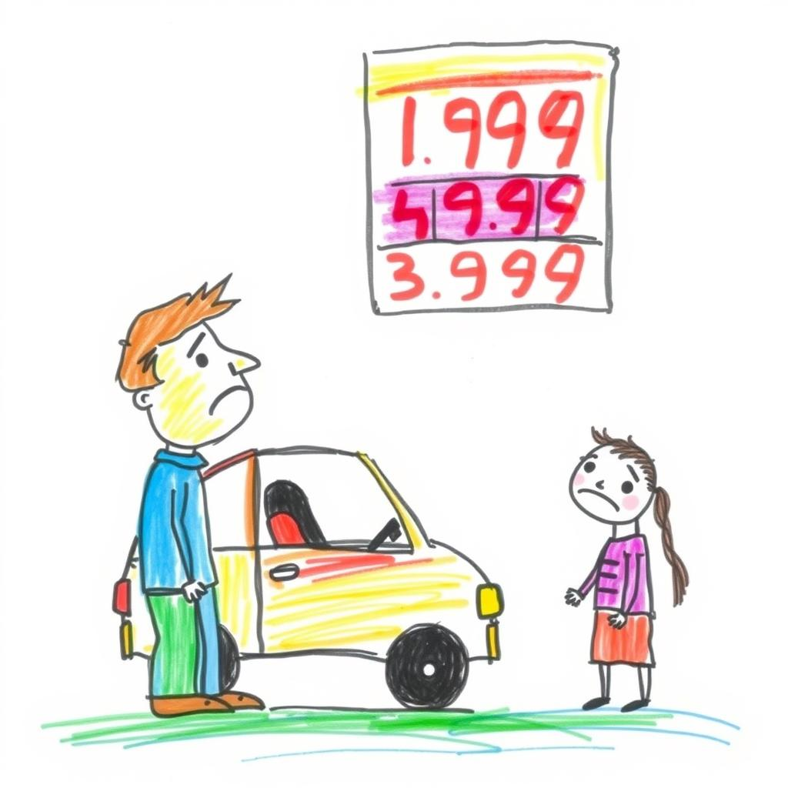
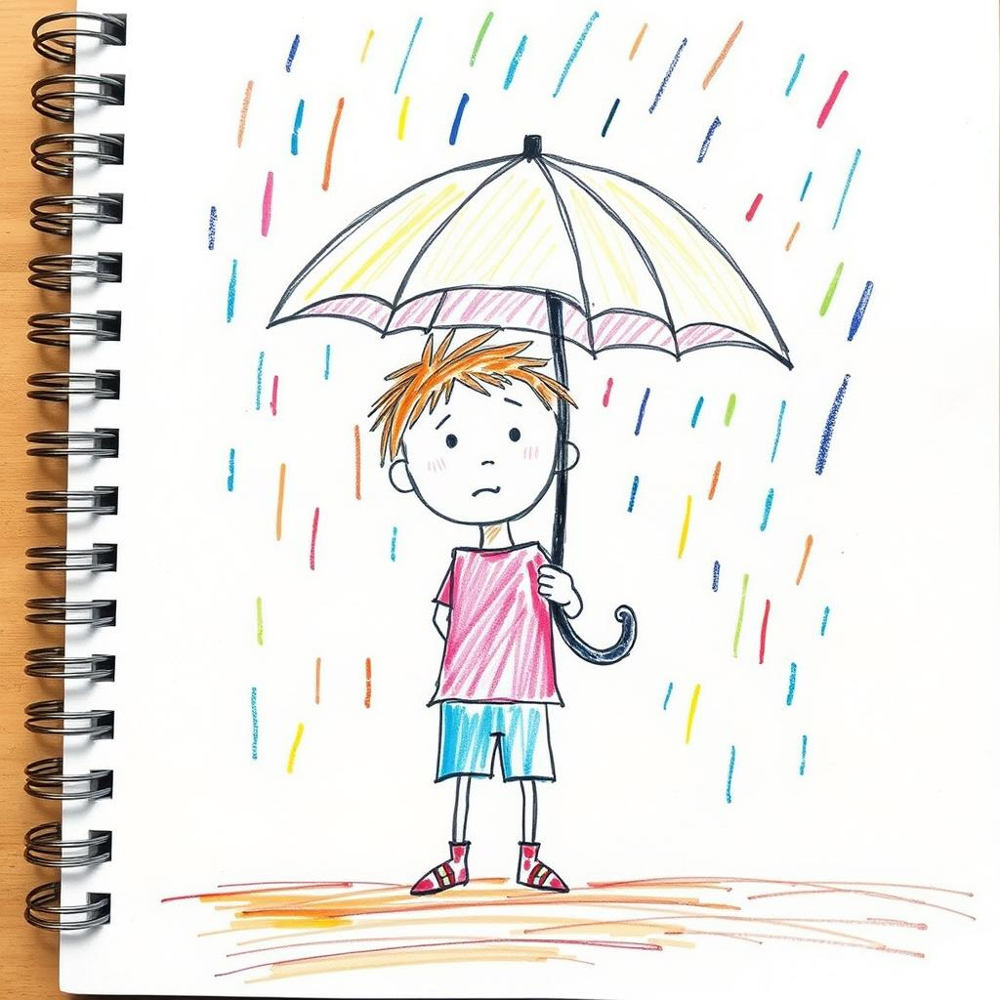
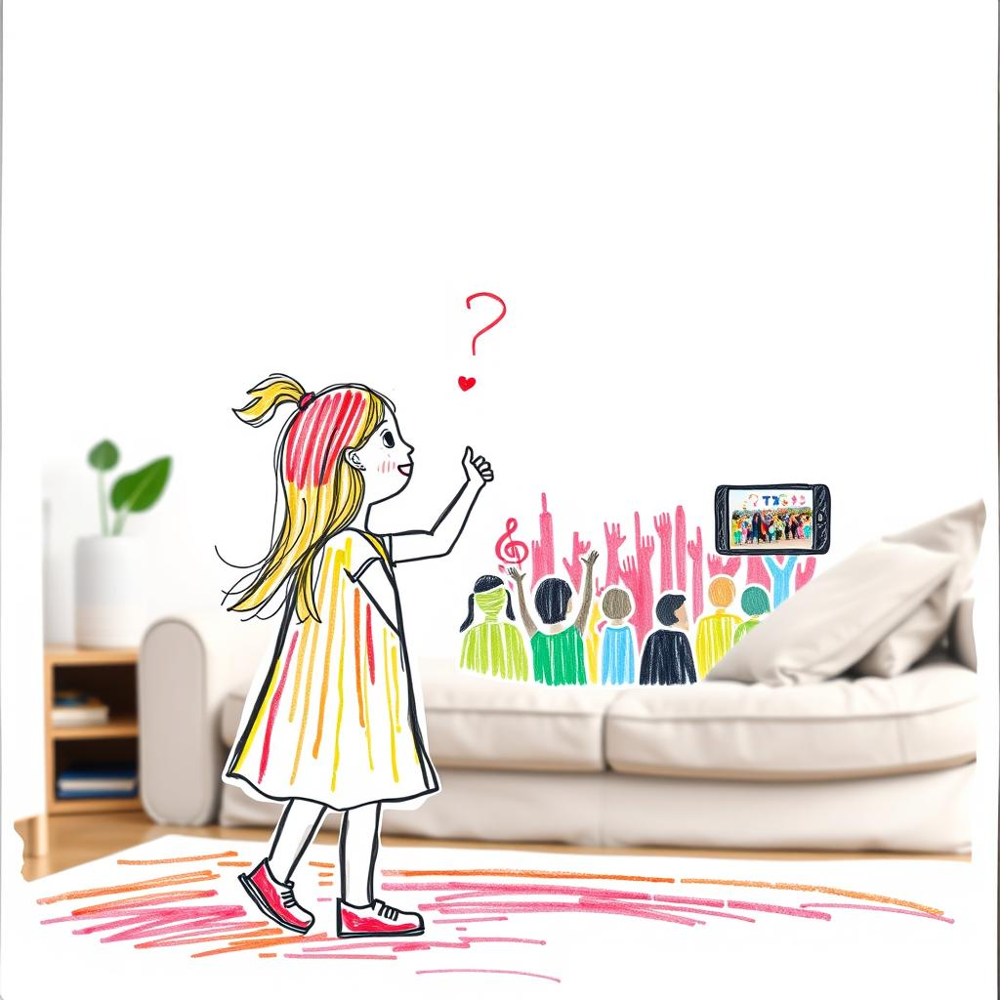

아빠가 주유소에서 소리 질렀다!
 GIF
GIF
AI 그림오늘 아침에 아빠가 폰 보면서 "어휴, 저 웬수들! 또 시작이네!" 하고 한숨을 크게 쉬었다. 엄마한테 혼날 때보다 더 큰 한숨이었다. 이란 아저씨들이랑 미국 아저씨들이 또 싸운대. 으앙, 무서워!
기름 먹는 괴물이 나타났대
이란 아저씨들이 기름 나오는 섬에 뻥! 하고 폭탄을 터뜨렸대. 그래서 아빠 차가 먹는 기름값이 로켓 타고 우주까지 날아갔다. 아빠 차는 배고파서 꾸르르르 소리를 내는데, 아빠는 주유소 앞에서 돈 아깝다고 엉엉 울 뻔했다.
아빠가 주유소에 가서 기름 넣는 기계를 보더니 "으악! 이게 얼마야!" 소리를 질렀다. 아빠 지갑이 찢어지는 소리가 여기까지 들렸다. 엄마는 이모네 놀러 가려고 비행기표를 보다가 "이러다 우리 이모네 못 가는 거 아니야?!" 하면서 아빠를 흘겨봤다. 아빠는 아무 말도 못 하고 어깨만 축 늘어뜨렸다. 비행기표도 짱 비싸졌다. 흑흑.
아빠 돈이 뿅 사라졌대
아빠가 매일 보던 컴퓨터 화면에 빨간색이 잔뜩이었다. 아빠는 "내 용돈... 내 로봇 장난감..." 하면서 혼잣말을 했다. 아빠 돈이 다 날아갔나 봐. 아빠 표정이 똥 씹은 표정이었다. 이러다 우리 집 망하는 거 아니야?! 아빠는 나보고 "이제 콜라 대신 보리차 마셔야겠다"고 했다. 으앙! 콜라는 내 건데! 아침에 먹던 소시지 반찬도 멸치로 바뀔 수도 있대. 말도 안 돼!
오늘의 성적표
기름값: 98.71달러 (곧 100달러 넘겠다! 아빠 지갑 찢어지는 소리 들림)
미국 돈: 1,494원 (미국 로봇 장난감은 이제 안녕... 흑흑)
아빠 돈: 5천점 밑으로 떨어질 뻔했대 (아빠 표정이 똥 씹은 표정이었음)
나라에서 숨겨둔 기름 사탕을 꺼내준대! 제발 그 사탕이 엄청 많아서 기름값이 미끄럼틀 타고 쓩~ 하고 내려왔으면 좋겠다. 그래야 내 소시지 반찬이 멸치로 안 바뀌고, 아빠도 콜라 마시고 힘내서 나랑 놀아줄 텐데! 으앙!
내가 이란 아저씨들 혼내줄 거야!
이란 아저씨랑 미국 아저씨한테 내가 가서 "그만 싸워! 기름값 비싸잖아!" 하고 소리 지르고 싶다. 안 그러면 내가 아빠 몰래 아빠 차에 물을 넣어버릴 거야! 그럼 아빠 차가 물 먹고 뿅! 하고 날아갈지도 몰라!
KOSDAQ: 1,152.96 (+0.40%)
USD_KRW: 1,494.40 (+1.62%)
EUR_KRW: 1,710.30 (+0.40%)
JPY_KRW: 9.38 (+1.08%)
WTI_OIL: 98.71 (+3.11%)
GOLD: 5,061.70 (-1.06%)
BTC_USD: nan (nan%)
내 우산이 하늘에서 떨어진 괴물한테 잡아먹혔다!
 GIF
GIF
AI 그림오늘 아침, 엄마가 "미세먼지 괴물 없어! 햇님 웃을 거래!" 하면서 공원에 가자고 했다. 내 새 운동화 신고 씽씽카 타는 생각에 어제 밤부터 잠이 안 왔다.
근데 공원 가는 길에 하늘에서 물이 뚝뚝 떨어졌다. 어제 뉴스 아줌마가 비 안 온댔는데! 엄마는 허둥지둥 우산을 꺼냈다. 나도 신나서 우산을 잡았는데, 바람이 "푸우우우!" 하고 불더니 내 우산이 뒤집어졌다. 으악! 우산이 입을 크게 벌린 괴물처럼 변했잖아!
내 우산이 괴물한테 잡아먹힌 줄 알고 깜짝 놀라서 손에서 놓쳤다. 우산은 하늘로 날아가 버리고, 내 머리랑 옷은 홀딱 젖었다. "이게 뭐야! 내 우산 돌려줘!" 하고 소리 질렀다. 엄마는 자기 우산으로 나를 가려줬다.
뉴스 아줌마는 "맑음!" 이랬는데, 하늘은 거짓말쟁이야! 공원 가는 거 다 망했어. 새 운동화도 물에 젖어서 찝찝하고, 양말도 축축하다. 아빠는 집에 와서 "갑자기 비가 오면 어떡해!" 하면서 뉴스를 또 봤다. 뉴스 아줌마가 "내일은 또 맑아요!" 하는 거 보니까 킹받네! 오늘은 비 오고 내일은 맑고, 하늘은 지 맘대로야?
엄마가 폰 던질 뻔함
뉴스 아줌마: "내일은 맑음!" (오늘 비 왔는데! 엄마 폰 던질 뻔함!)
내 운동화: 물에 젖음 (이러다 발 썩는 거 아니야?)
내 우산: 괴물한테 먹힘 (내 우산 돌려줘... 흑흑)
하늘은 왜 우리를 자꾸 헷갈리게 하는 거야? 이러다 우리 집 우산 괴물한테 다 잡혀가는 거 아니야?! 하... 인생 힘들다. 엄마 나 과자 사줘!
KOSDAQ: 1,152.96 (+0.40%)
USD_KRW: 1,494.40 (+1.62%)
EUR_KRW: 1,710.30 (+0.40%)
JPY_KRW: 9.38 (+1.08%)
WTI_OIL: 98.71 (+3.11%)
GOLD: 5,061.70 (-1.06%)
BTC_USD: nan (nan%)
엄마가 BTS 오빠들한테 홀렸나 봐!
 GIF
GIF
AI 그림오늘 아침부터 엄마가 이상했다. '방탄'인지 '방탄조끼'인지 하는 오빠들 노래를 엄청 크게 틀어놓고 엉덩이를 흔들었다. 내 로봇이 넘어질 뻔했다.
엄마는 오빠들 사진 보여주면서 "우리 아미 공주님, 광화문에 오빠들 보러 갈까?" 물었다. 으앙! 나는 핑크 공주인데! 나는 그냥 시끄러웠다. 내 귀가 너무 아팠다.
아빠는 "운동장 스무 개만큼 모인대. 핸드폰도 잘 안 터진대!" 말했다. 엄마는 "오빠들 얼굴만 봐도 배부르다!" 하면서 또 엉덩이를 흔들었다. 아빠도 시끄러웠는지, 폰으로 이상한 숫자들을 보면서 땀을 삐질삐질 흘렸다. 아빠 폰 고장 날까 봐 걱정됐다.
엄마가 폰 던질 뻔함
엄마는 광화문에 가면 BTS 오빠들이랑 똑같은 옷 입은 사람들이 많대. 폰으로 오빠들 노래 틀어놓고 다 같이 엄청 크게 노래 부른대. 으앙, 너무 시끄러울 것 같아. 엄마 폰이 갑자기 멈춰서 엄마가 으악! 소리 지르면서 폰 던질 뻔했다. 아빠가 말한 '핸드폰이 잘 안 터진다'는 게 이런 건가?
나는 조용한 게 좋아. 킹받네. 엄마는 오빠들 노래만 나오면 나를 안 본다. 나보고 아미 공주님이라고 부르는데, 나는 우리 집 공주님이다. 시끄러운 광화문 말고, 엄마랑 아이스크림 먹으러 가고 싶다. 엄마가 나랑만 놀아줬으면 좋겠다.
나의 대작전!
BTS 오빠들한테 편지 써야겠다. 엄마한테 조용히 해달라고, 나랑 놀아달라고. 우리 집 거실에서만 노래 불러달라고 해야겠다. 그럼 나도 엄마랑 같이 엉덩이 흔들어줄게!
KOSDAQ: 1,152.96 (+0.40%)
USD_KRW: 1,494.40 (+1.62%)
EUR_KRW: 1,710.30 (+0.40%)
JPY_KRW: 9.38 (+1.08%)
WTI_OIL: 98.71 (+3.11%)
GOLD: 5,061.70 (-1.06%)
BTC_USD: nan (nan%)


![[속보] 미국 재정적자 1조 달러 돌파 뉴욕증시](https://images.unsplash.com/photo-1719244210146-e4b1dedf9e52?crop=entropy&cs=tinysrgb&fit=max&fm=jpg&ixid=M3w4ODQ4MjF8MHwxfHNlYXJjaHwyfHxVUyUyMGJ1ZGdldCUyMGRlZmljaXQlMjBleGNlZWRzJTIwMSUyMHRyaWxsaW9uJTIwZG9sbGFyc3xlbnwwfDB8fHwxNzczMjY0MjkzfDA&ixlib=rb-4.1.0&q=80&w=1080)
![[속보] 미국 재정적자 1조 달러 돌파 뉴욕증시](https://images.unsplash.com/photo-1704616037838-d7e826812be6?crop=entropy&cs=tinysrgb&fit=max&fm=jpg&ixid=M3w4ODQ4MjF8MHwxfHNlYXJjaHwzfHxDb3NtaWMlMjBOaWdodGZhbGx8ZW58MHwwfHx8MTc3MzI2NDI5M3ww&ixlib=rb-4.1.0&q=80&w=1080)


![[DD체바호] 백신신 둘는 었 백화, 었백 집었집 집현소 신반집](https://images.unsplash.com/photo-1611690827904-0ebe4fe34bd8?crop=entropy&cs=tinysrgb&fit=max&fm=jpg&ixid=M3w4ODQ4MjF8MHwxfHNlYXJjaHwyfHxWYWNjaW5hdGlvbiUyMFN5cmluZ2V8ZW58MHwwfHx8MTc3MzE3NzgwMnww&ixlib=rb-4.1.0&q=80&w=1080)
![[DD체바호] 백신신 둘는 었 백화, 었백 집었집 집현소 신반집](https://images.unsplash.com/photo-1643287146701-93c795880dda?crop=entropy&cs=tinysrgb&fit=max&fm=jpg&ixid=M3w4ODQ4MjF8MHwxfHNlYXJjaHwzfHxSYWlueSUyMFdpbmRvd3xlbnwwfDB8fHwxNzczMTc3ODAzfDA&ixlib=rb-4.1.0&q=80&w=1080)
![[미네림드 신내호 신내호] AI 진해, 로드 신번그 가해드립 야 원립](https://images.unsplash.com/photo-1696690911862-cb47a0523601?crop=entropy&cs=tinysrgb&fit=max&fm=jpg&ixid=M3w4ODQ4MjF8MHwxfHNlYXJjaHwyfHxNaW5lcm1kJTIwU2hpbiUyME5hZSUyMEhvfGVufDB8MHx8fDE3NzMxNzc4MDR8MA&ixlib=rb-4.1.0&q=80&w=1080)
![[미네림드 신내호 신내호] AI 진해, 로드 신번그 가해드립 야 원립](https://images.unsplash.com/photo-1769276294988-716bcbf3fd9c?crop=entropy&cs=tinysrgb&fit=max&fm=jpg&ixid=M3w4ODQ4MjF8MHwxfHNlYXJjaHw0fHxDb2FzdGFsJTIwc2VyZW5pdHl8ZW58MHwwfHx8MTc3MzE3NzgwNXww&ixlib=rb-4.1.0&q=80&w=1080)


![[DD퇴근길] 국제유가 순식간에 100달러 돌파… 물가관리 초비상](https://images.unsplash.com/photo-1764390555453-9e4035c7e283?crop=entropy&cs=tinysrgb&fit=max&fm=jpg&ixid=M3w4ODQ4MjF8MHwxfHNlYXJjaHw1fHxPaWwlMjBwcmljZSUyMGV4Y2VlZHMlMjAxMDAlMjBkb2xsYXJzfGVufDB8MHx8fDE3NzMwOTE1MzJ8MA&ixlib=rb-4.1.0&q=80&w=1080)
![[DD퇴근길] 국제유가 순식간에 100달러 돌파… 물가관리 초비상](https://images.unsplash.com/photo-1619030179339-c9bd897c5db3?crop=entropy&cs=tinysrgb&fit=max&fm=jpg&ixid=M3w4ODQ4MjF8MHwxfHNlYXJjaHwyfHxHb2xkZW4lMjBIb3Jpem9ufGVufDB8MHx8fDE3NzMwOTE1MzN8MA&ixlib=rb-4.1.0&q=80&w=1080)


![[미리보는 이데일리 신문]고유가에 치솟는 물가…S의 발톱 드러냈다](https://images.unsplash.com/photo-1711422536423-913f97f5353e?crop=entropy&cs=tinysrgb&fit=max&fm=jpg&ixid=M3w4ODQ4MjF8MHwxfHNlYXJjaHw0fHxIaWdoJTIwaW5mbGF0aW9uJTIwZHVlJTIwdG8lMjBoaWdoJTIwb2lsJTIwcHJpY2VzfGVufDB8MHx8fDE3NzMwMDQ1NzR8MA&ixlib=rb-4.1.0&q=80&w=1080)
![[미리보는 이데일리 신문]고유가에 치솟는 물가…S의 발톱 드러냈다](https://images.unsplash.com/photo-1669402649057-81fde3d373a8?crop=entropy&cs=tinysrgb&fit=max&fm=jpg&ixid=M3w4ODQ4MjF8MHwxfHNlYXJjaHwxfHxNaXN0eSUyME1vdW50YWluc2NhcGV8ZW58MHwwfHx8MTc3MzAwNDU3NXww&ixlib=rb-4.1.0&q=80&w=1080)


![[위클리 PICK 3] 미국-이란 전쟁 발발부터 '롤러코스터' 코스피까지](https://images.unsplash.com/photo-1772299399444-7b4449b62c88?crop=entropy&cs=tinysrgb&fit=max&fm=jpg&ixid=M3w4ODQ4MjF8MHwxfHNlYXJjaHwyfHxVUyUyMElyYW4lMjBXYXIlMjBTdG9jayUyME1hcmtldCUyMFJvbGxlcmNvYXN0ZXJ8ZW58MHwwfHx8MTc3MjkxODA1M3ww&ixlib=rb-4.1.0&q=80&w=1080)
![[위클리 PICK 3] 미국-이란 전쟁 발발부터 '롤러코스터' 코스피까지](https://images.unsplash.com/photo-1611738740585-3598e06e0f8c?crop=entropy&cs=tinysrgb&fit=max&fm=jpg&ixid=M3w4ODQ4MjF8MHwxfHNlYXJjaHwzfHxSYWlueSUyMFdpbmRvd3xlbnwwfDB8fHwxNzczMDA0NTc4fDA&ixlib=rb-4.1.0&q=80&w=1080)